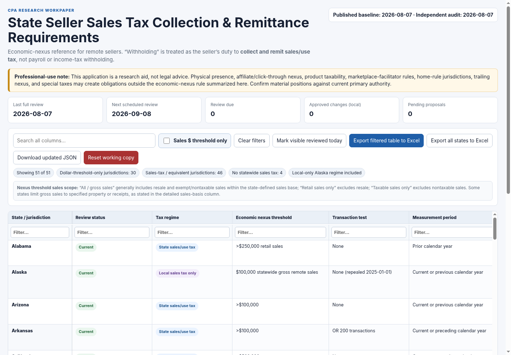
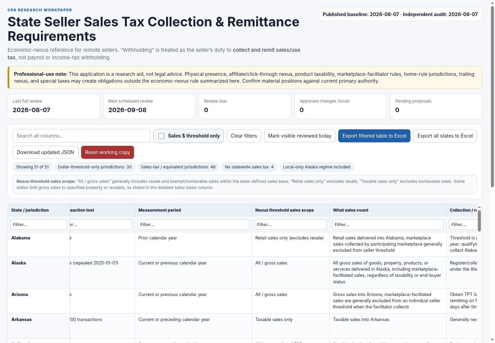
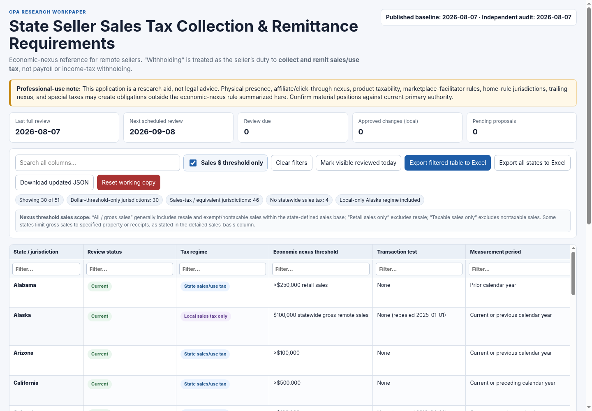
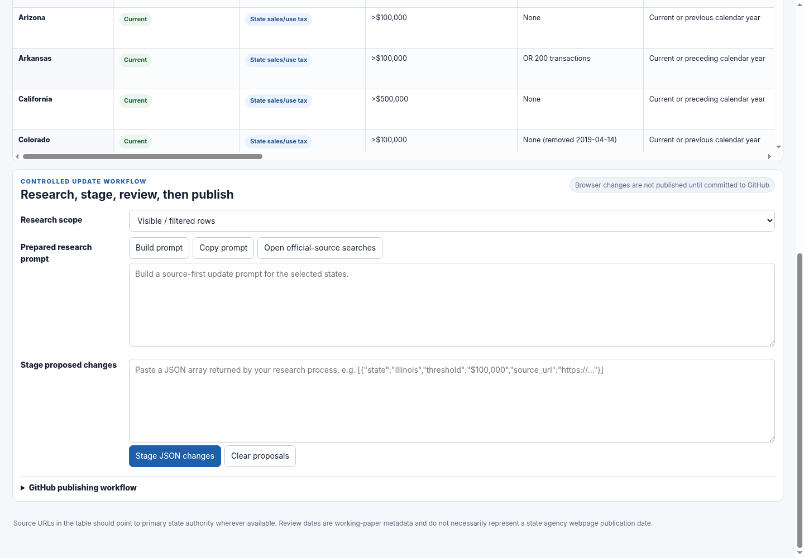

1. What you are publishing
This project is a static web application. The browser reads data/state-nexus.json, renders the table, and lets you research, stage, review, and export changes. GitHub Pages hosts the public website; GitHub Actions validates and deploys it.
tax data
browser app
validate + deploy
live website
Current dataset snapshot
Economic-nexus test structure
Counts from the audited 51-jurisdiction dataset included with this project.
Nexus threshold sales scope
2. GitHub setup — beginner route
.github workflow folder.Unzip the project
Extract the package to a normal working folder, such as Documents/state-sales-tax-nexus-package. Inside it you should see the sales-tax-nexus-github folder and the file tree shown above.
index.html, data/state-nexus.json, and .github/workflows/deploy.yml exist before continuing.Install and sign in to GitHub Desktop
Install GitHub Desktop and authenticate it to the GitHub account or organization that will own the site. GitHub's current beginner documentation explains that Desktop provides a graphical interface for repository creation, commits, branches, and publishing.
Create an empty local repository
In GitHub Desktop choose File → New repository. A clear repository name is state-sales-tax-nexus. Choose a local folder you can find easily. Do not add a special framework; this is a static site.
Local path: Documents/GitHub
Git ignore: None
License: None
Copy the app files into that repository
Open the new repository folder on your computer. Copy the contents of sales-tax-nexus-github into the repository root. The repository root should contain index.html directly—not another nested sales-tax-nexus-github folder.
state-sales-tax-nexus/sales-tax-nexus-github/index.html, the project is nested one level too deep. Move the inner files up one level.Commit the initial version
Return to GitHub Desktop. You should see the project files listed under Changes. In the Summary box enter Initial CPA nexus app, then click Commit to main.
Publish the repository to GitHub
Click Publish repository. Choose your GitHub account/organization. If the website will be public, publish as a public repository. If using a private repository, confirm that your GitHub plan and Pages settings support the visibility you need.
Turn on GitHub Pages with GitHub Actions
Open the repository on GitHub.com. Click Settings. In the left sidebar under Code and automation, click Pages. Under Build and deployment → Source, choose GitHub Actions.
Build and deployment
Source: GitHub Actions ▾
GitHub's current documentation uses the same Settings → Pages → GitHub Actions path. The included workflow checks out the repository, validates the dataset, builds the static artifact, and deploys it.
Watch the first deployment
Click the repository's Actions tab. Open the newest Deploy GitHub Pages run. The important checks are:
- Validate nexus dataset
- Reconcile audited benchmark fields
- Syntax-check application JavaScript
- Upload Pages artifact
- Deploy to GitHub Pages
When the workflow is green, GitHub exposes the Pages URL. A normal project site is typically https://YOUR-USERNAME.github.io/state-sales-tax-nexus/.
Perform the first live-site acceptance test
- Confirm the page shows 51 jurisdictions.
- Search for Illinois.
- Turn on Sales $ threshold only and confirm the result count changes.
- Clear filters.
- Filter the Nexus threshold sales scope column for
Retail. - Click a state source link and confirm it opens official authority.
- Click Export all states to Excel and open the workbook.
- Open guide.html from the live site and save it as your operating manual bookmark.
Web-browser-only fallback
If you do not want GitHub Desktop, GitHub also supports creating a repository and uploading files from the web interface. For this project, carefully verify that the hidden .github folder and .nojekyll file made it into the repository; missing workflow files are a common reason Pages does not deploy.
3. What the loaded application should look like



4. Controlled tax-data update workflow
The update process is deliberately split into research, staging, professional review, and publication. Do not bypass the review step merely because a research tool returns structured JSON.

Start from a review trigger
The included nexus-review.yml workflow runs monthly and creates a GitHub Issue for the review cycle. You can also begin a review whenever a state announces legislation, a client fact pattern changes, or you discover conflicting guidance.
Select the jurisdiction(s)
In the live app, filter the State column to the state you want to review, or leave all states visible. Under Research scope, choose Visible / filtered rows for a targeted review or All jurisdictions for a full scan.
Build and copy the research prompt
Click Build prompt, then Copy prompt. The generated prompt contains the current record and tells the researcher to verify the dollar threshold, transaction count, measurement period, sales scope, sales included, collection timing, marketplace interaction, effective date, review date, and official source.
Research primary authority first
Use a web-capable research tool and insist on official authority: enacted statutes, enrolled bills, revenue-department bulletins, regulations, official FAQs, and official tax-agency pages. Use secondary charts only as a cross-check.
| Preferred | Use |
|---|---|
| Current codified statute | Best source after legislation has been incorporated into the state code. |
| Enacted bill / public act | Best source when a recent change is not yet fully reflected on agency webpages. |
| Revenue bulletin / tax notice | Useful for effective dates, transition rules, registration timing, and examples. |
| Revenue FAQ / remote-seller page | Useful operational guidance; check that it reflects recent legislation. |
| Secondary nexus chart | Cross-check only. Do not use as final authority if primary sources disagree. |
Require JSON-only output
The app expects a JSON array. Each state object may use these keys:
Dates should use YYYY-MM-DD. The state name must match the table exactly.
Paste and stage—do not approve yet
Paste the JSON array into Stage proposed changes and click Stage JSON changes. The app compares the proposed values to the working record and creates a diff card for each changed state.
Perform the CPA review
For each proposal, review every changed field and click Open cited source. Check at least:
- Was the law actually enacted, not merely introduced?
- Is the effective date correct?
- Does the threshold use
>or≥/ “at least” language? - Does the state count gross, retail, taxable, or another defined sales base?
- Are marketplace-facilitated sales included or excluded in the seller's threshold?
- Does collection begin immediately, prospectively, next month, or after a specified number of days?
- Is the cited source current and official?
Approve or reject
Click Approve only after the source supports the proposed field changes. Use Reject when the source is inadequate or the wording overstates the law. Approval updates only your browser working copy.
Download the reviewed files
Click Download updated JSON to save the revised state-nexus.json. Click Download update history to save update-history.json. Keep both files together.
Publish through a reviewable GitHub change
Recommended: create a branch such as tax-update-2026-08-illinois-kentucky in GitHub Desktop. Replace data/state-nexus.json and updates/update-history.json with the downloaded files. Commit with a precise summary, for example Update IL and KY economic nexus rules, publish the branch, and open a Pull Request.
Check automated validation
The Pull Request should run the repository's checks. If validation fails, do not merge. Review the failing job. Typical errors include a missing state, duplicate state, invalid date, missing source URL, malformed JSON, or a benchmark reconciliation mismatch.
Merge and verify the live site
After review and successful checks, merge the Pull Request to main. The Pages deployment runs automatically. When green, open the live site, filter to the changed state, confirm the updated values/source/date, and export the row to Excel as a final acceptance check.
5. Worked current-tax examples
Example A — Illinois: remove the 200-transaction test
Current law example Illinois Department of Revenue Bulletin FY 2026-12 states that effective January 1, 2026 the 200-transaction threshold no longer applies. The remaining remote-retailer threshold is $100,000 or more in cumulative gross receipts from sales of tangible personal property to Illinois purchasers during the applicable lookback period.
Primary source: Illinois DOR FY 2026-12
- Filter State = Illinois.
- Build and copy the research prompt.
- Verify the bulletin's effective date and the post-2025 threshold.
- If your older dataset still says
200 transactions, paste the JSON below. - Stage the proposal and compare the transaction-test, change-date, source, and notes fields.
- Open the cited Illinois source from the proposal card.
- Approve only after confirming the bulletin.
Example B — Kentucky: sales-volume-only test and 60-day timing
Current law example Kentucky's current KRS 139.340, effective August 1, 2026, uses a gross-receipts threshold above $100,000 for the previous or current calendar year and requires a remote retailer that crosses the threshold to register and collect no later than the first day of the calendar month that is at most 60 days after the threshold is reached. The 2026 legislation deleted the separate transaction-count nexus standard.
Primary source: Kentucky LRC – KRS 139.340
Legislative history: 2026 HB 757
This example also shows how to improve a row that already has the right threshold but has a less precise collection-timing description or still cites the bill instead of the codified statute.
Example C — no substantive change found
If you research a state and confirm that every substantive field is still accurate, you do not need to manufacture a change. Filter to that state and click Mark visible reviewed today. This updates the browser working copy's review date and records the review confirmation. Then download the dataset/history and publish them through the same reviewed GitHub process.
6. Publishing checklist for every tax update
| Control | Required action |
|---|---|
| Primary authority | Open and read the cited statute, enacted bill, regulation, bulletin, or official agency guidance. |
| Effective date | Record when the rule legally changes—not merely the webpage update date. |
| Review date | Set last_reviewed to the date you actually verified the row. |
| Sales scope | Confirm gross/all, retail-only, taxable-only, or special defined base. |
| Marketplace interaction | Confirm whether facilitated sales count in the seller's threshold and who collects/remits. |
| Collection timing | Capture any prospective start date, next-month rule, grace period, or registration deadline. |
| GitHub review | Prefer a Pull Request for material rule changes; review the file diff before merge. |
| Automated checks | Require the dataset/audit/JavaScript checks to pass. |
| Live verification | After deploy, inspect the changed row and run an Excel export. |
7. Troubleshooting
| Problem | What to check |
|---|---|
| Pages site shows 404 | Settings → Pages must use GitHub Actions; confirm the Deploy GitHub Pages workflow completed and index.html is at the project root. |
| Table says loading / no rows | Check that data/state-nexus.json exists and is valid JSON. Open the Actions validation logs. |
| Changes disappear on another computer | Browser working-copy changes are stored locally. Download the JSON files and commit them to GitHub. |
| Monthly review issue is not created | Open Actions → Monthly Nexus Review Reminder. Confirm Actions are enabled and run it manually once with Run workflow. |
| Excel export contains fewer rows | Export filtered table exports only visible rows. Use Export all states to Excel for all 51 jurisdictions. |
| Pull Request check fails | Open the failing job. Correct the JSON/schema/source/date issue before merging. Never bypass a failed tax-data validation merely to deploy. |
| GitHub Pages does not show the guide | Confirm guide.html is in the repository root and that the deploy workflow includes it in the Pages artifact. |
8. Recommended operating cadence
full change scan
material legislation
re-verify key state
PR + deploy + live check
A scheduled review is a control, not a substitute for event-driven monitoring. Material legislation can become effective between scheduled reviews. For a filing or collection position with meaningful exposure, re-open the primary authority before relying on the table.